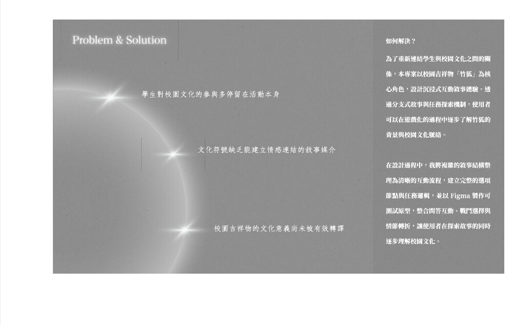
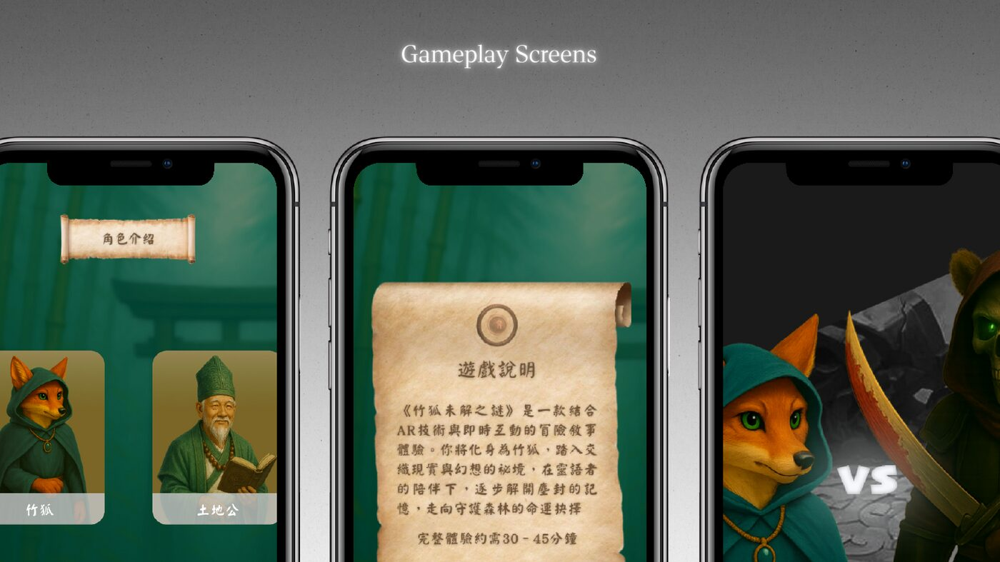
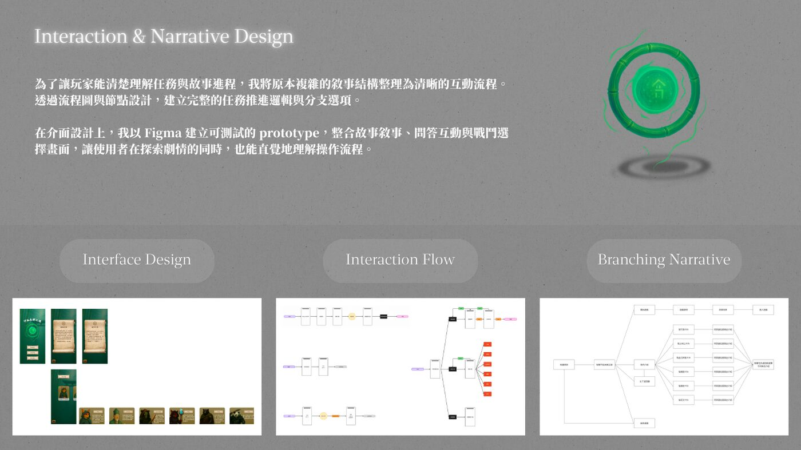
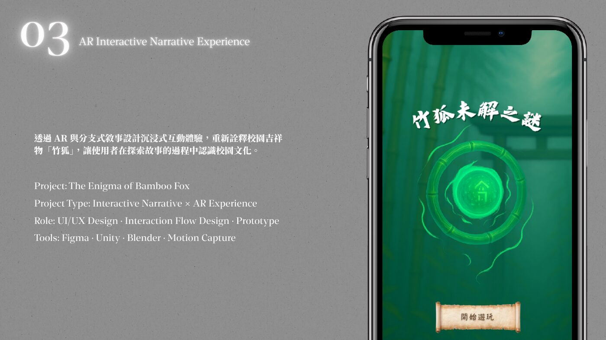

Problem & Solution
學生對校園文化的參與多停留在活動本身，文化符號缺乏能建立情感連結的敘事媒介，校園吉祥物的文化意義尚未被有效轉譯。本專案以校園吉祥物「竹狐」為核心角色，設計沉浸式互動敘事體驗，讓使用者在遊戲化的過程中深入了解竹狐的背景與校園文化脈絡。

世界觀與角色設定
以 AR 為主打亮點的沉浸式互動敘事體驗，使用者透過一系列挑戰與任務，在現實中探索故事世界的文化元素。以校園文化與吉祥物竹狐為題，發展世界觀與角色設定，建立故事的敘事基礎。

互動流程
將故事內容轉化為互動任務與操作流程，設計使用者在故事中可參與的路徑與選擇，建立完整的選項節點與任務邏輯鏈。

原型截圖
整體介面以竹林、卷軸與墨色質感建立東方奇幻氛圍，呼應竹狐傳說的神祕感。互動上以「竹印」作為核心符號，結合傳統印記與竹節意象，讓玩家在推進任務時透過蓋印完成確認、留下探索痕跡，並逐步進入故事。
整合問答互動、戰鬥選擇與情節轉折，以 Figma 建立可測試原型。